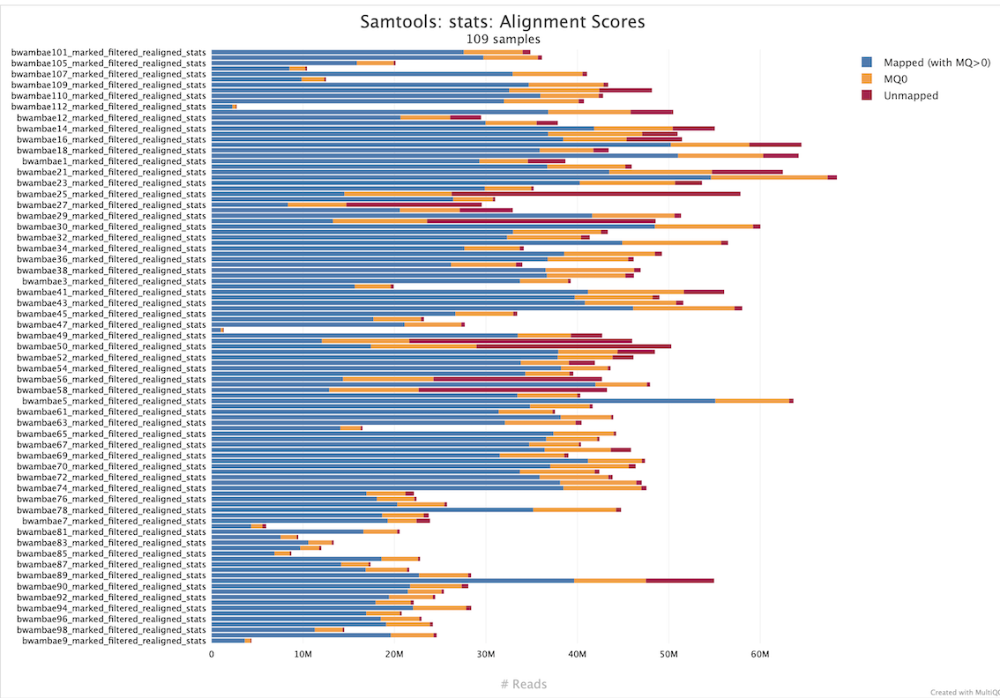

Mapping Reads to a Reference Genome with BWA: Burrows-Wheeler Aligner¶
Table of Content
Overview¶
BWA (Burrows-Wheeler Aligner) is a fast and memory-efficient software package for aligning relatively short nucleotide sequences (reads) against a large reference genome, such as the human genome. It is widely used in bioinformatics pipelines for processing next-generation sequencing (NGS) data.
BWA supports three primary algorithms:
- BWA-backtrack: Optimized for short reads (≤100 bp), typically from early Illumina platforms.
- BWA-SW: Suitable for longer reads with higher error rates.
- BWA-MEM: The most commonly used algorithm, designed for reads ≥70 bp. It is accurate, fast, and supports gapped alignment and split-read mapping.
Scientific Principles¶
BWA is based on the Burrows-Wheeler Transform (BWT) and the FM-index, which enable efficient substring matching in large texts. The BWT rearranges a string into runs of similar characters, facilitating compression and fast search. The FM-index, a compressed suffix array, allows backward searching of patterns in logarithmic time.
The alignment process involves:
- Indexing the reference genome using BWT and FM-index.
- Seeding: Finding exact or near-exact matches of substrings (seeds) from the query.
- Extension: Extending seeds into full alignments using dynamic programming.
- Scoring: Assigning alignment scores based on match/mismatch, gap penalties, and quality scores.
Typical Usage¶
Indexing the Reference Genome¶
Before alignment, the reference genome must be indexed:
This generates several auxiliary files (.amb, .ann, .bwt, .pac, .sa) used during alignment.
Preparing a List of Fastq Files To Be Treated¶
| generate_fastq_files_list.sh | |
|---|---|
Mapping Reads On a Reference Genome with BWA-MEM on a HPC Cluster¶
Samples in a unique pair of Fastq files¶
Here is a script used for the mapping of paired-end Fastq files from the mosquito Anopheles gambiae. Each sample is in a unique pair of Fastq files (<samplename>_1|R1.fastq.gz; <samplename>_2|R2.fastq.gz):
This SLURM batch script is designed to perform parallelized read alignment using BWA-MEM on a high-performance computing (HPC) cluster. It leverages SLURM's job array functionality to process multiple samples in parallel, each defined by a line in a file named fastq_names.
SLURM Configuration¶
Other key SLURM directives:
Sample Name and Read Group¶
The script extracts the sample name corresponding to the current array task:
BWA-MEM Alignment¶
The core of the script is the bwa mem command:
Key Options Explained¶
- -M: Marks shorter split hits as secondary. This is important for compatibility with Picard tools, which expect this flag for proper duplicate marking.
- -T 0: Disables the minimum alignment score threshold. By default, BWA filters out alignments with a score below 30. Setting -T 0 ensures that all alignments, even low-quality ones, are retained in the output SAM file. Reads with low quality will be marked as "MQ0" by samtools (see figure below).
This is particularly useful when using samtools stats after duplicate removal, as it allows reads with mapping quality 0 (MQ0) to be included in the statistics. These reads are often excluded by default but can be informative for assessing alignment quality and coverage. - -t 16: Uses 16 threads to speed up the alignment process.
 Example of MQ0 reads (in orange) in samtools stats when -T option is set to 0
Samples in multiple lanes = multiple Fastq files¶
Sometimes, a single biological sample is sequenced across multiple lanes of a Illumina flowcell. This is done for a few reasons:
- To increase sequencing depth (more data = better coverage)
- To balance the load across lanes
- To reduce technical biases from a single lane
As a result, you may receive multiple FASTQ files for the same sample, one from each lane.
These files usually have lane identifiers in their filenames (e.g., Sample1_L001R1.fastq.gz, Sample1L002_R1.fastq.gz, etc.).
It is important to preserve the lane information when mapping reads.
Each group of reads from a lane must be mapped separately using a specific Read Group (RG) tag in the aligner (e.g., with @RG in bwa mem), which includes the lane number. This allows downstream tools to track the origin of each read and correct for lane-specific technical variations.
In this case,the content of the info_files/fastq_files.list will be:
| info_files/fastq_files.list | |
|---|---|
Here is a script used for the mapping of paired-end Fastq files from the mosquito Anopheles gambiae, in multiple pair (or not) of Fastq files:
The pattern¶
The FASTQ filenames in info_files/fastq_files list follow this pattern:
Structure (underscore-delimited):- Extracting the Sample Name
-F'[_]': Sets the field separator to _ (underscore).{print $1"_"$2}: Concatenates the first and second fields (e.g., Sample_1).
Purpose: This extracts just the biological sample name, discarding sequencing run or lane info.
2. Extracting the Lane Number
-
{print $5}: Returns the fifth field, which is the lane ID, e.g., L3.Purpose: Extracts the lane identifier to uniquely label the read group by sequencing origin.
These extracted values are used to construct the @RG (Read Group) line passed to BWA:
ID: the lane (e.g., L3)SM: the sample (e.g., Sample_1)CN: center name (hardcoded here as SC)PL: platform (ILLUMINA)
This enables tools like GATK, used in downstream analysis, to distinguish reads by lane and sample, correct for batch effects, and handle duplicates correctly.
Only after alignment, once the Read Groups are set, the resulting BAM files can be merged into a single file. This ensures that each read retains its correct sequencing context. See The Bam File section for more informations.
So, although the sample appears split at the FASTQ level, it is best to map each lane separately and merge the BAMs later — not the FASTQs — to preserve data integrity and support proper downstream processing like duplicate marking or base recalibration.